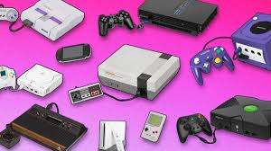
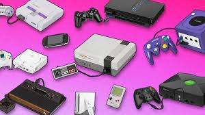
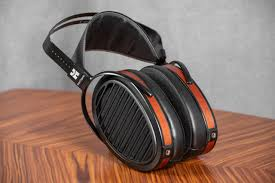
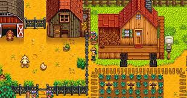

About my portfolio website
This portfolio website will tell you about my hobbies and my goals. Enjoy!
My Hobbies
 


Music
One of my favorite activities to do in my spare time is to listen to music. I love making music, listening to music, and analyzing music. The headphones to the right are my favorite headphones and the headphones ive used to analyze music for a long time are called the hifiman aryas. They are wonderful for listening, analyzing, and even making music.
Video games
I have been collecting videogames since I was a young child. Although I have sold most of my videogames from the past I still have a small collection. My favorite consoles are gamecube and ps2 and my favorite way to play games in on pc. I also love to mod consoles and I have 2 modded switches, a modded 3ds, and a modded gamecube. I like playing everything form RPG'S to strategy games, roguelites, FPS shooters, etc. 